量子糾錯與 el-loom 生態系概觀：從抽象碼到模組化軟體棧
本課程旨在建立從「抽象量子糾錯碼」到「實際可程式化軟體棧」的一條完整概念鏈，
聚焦於 Entropica Labs 的 el-loom 生態系如何將現代理論量子糾錯
（特別是模組化、可組合的觀點）具體化為可操作的 Python 與 Rust 工具。
內容將分為三個層次：
- 理論層：量子糾錯碼的基本數學結構，著重穩態碼（stabilizer code）、CSS 碼與表面碼。
- 抽象軟體層：如何將「碼、雜訊、測量、解碼器」抽象成模組化元件。
- 實作層（el-loom）：介紹 el-loom 的主要模組與典型工作流程，如何表述碼、雜訊通道與解碼問題。
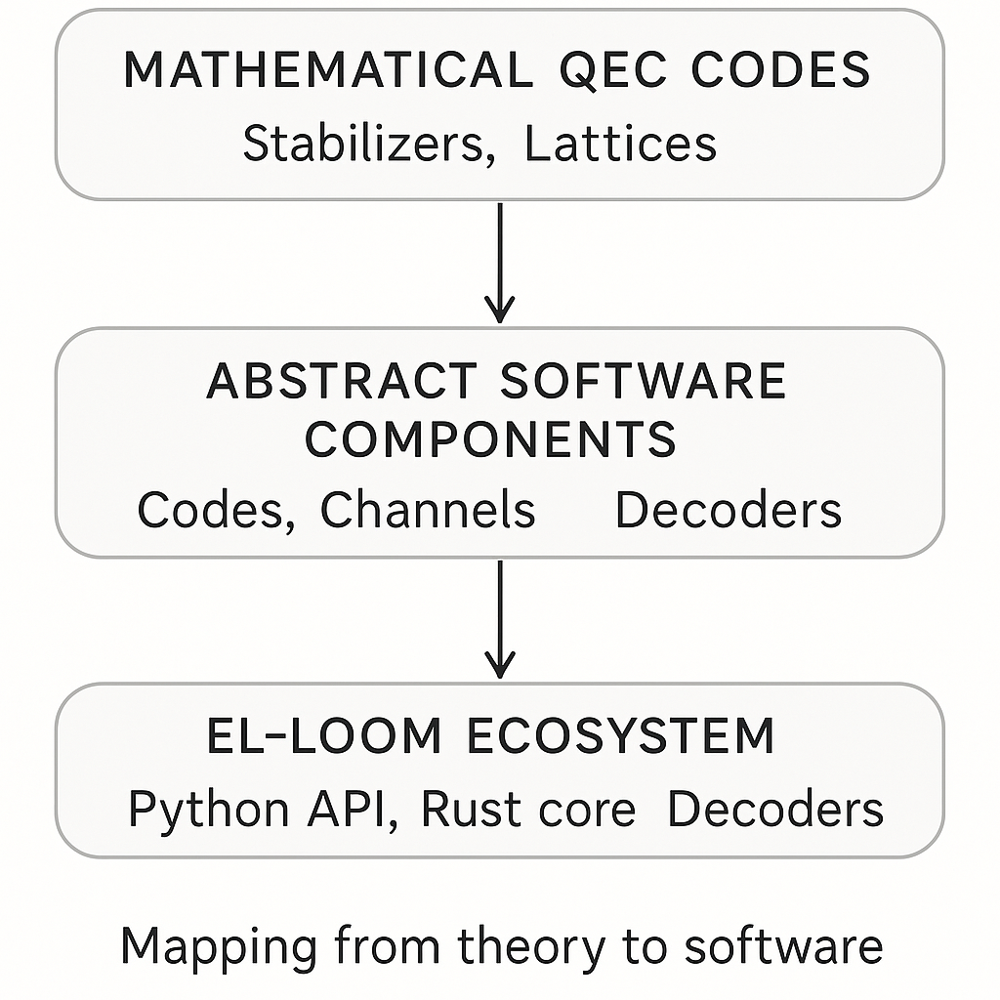
圖 1-19: An overview diagram of three layers: (1) Mathematical QEC codes (stabilizers, lattices), (2) abstract software components (codes, channels, decoders), (3) el-loom ecosystem (Python API, Rust core, decoders). Arrows show mapping from theory to software.
Prompt: An overview diagram of three layers: (1) Mathematical QEC codes (stabilizers, lattices), (2) abstract software components (codes, channels, decoders), (3) el-loom ecosystem (Python API, Rust core, decoders). Arrows show mapping from theory to software.
1. 理論基礎：從量子噪聲到穩態碼形式主義
1.1 量子噪聲與通道的數學表述
在實際量子裝置中，量子態 \(\rho\) 不可避免地受到環境耦合與控制誤差影響，
這可用一般的完全正且跡保持（CPTP）映射來描述：
\[
\mathcal{E} : \rho \mapsto \mathcal{E}(\rho),
\quad \mathcal{E}(\rho) = \sum_{k} E_k \rho E_k^\dagger,
\quad \sum_k E_k^\dagger E_k = I .
\]
經典上，錯誤通常被視為離散「比特翻轉」事件；在量子系統中，常見近似是
Pauli 離散錯誤模型：假設錯誤集合由
\(\{I, X, Y, Z\}^{\otimes n}\) 所張成，且誤差為稀疏、獨立：
\[
\mathcal{E}(\rho)
= \sum_{E \in \mathcal{P}_n} p(E) E \rho E^\dagger,
\]
其中 \(\mathcal{P}_n\) 為 \(n\) 量子比特 Pauli 群。
多數現代 QEC 解碼器（包含 el-loom 中支援的多數演算法）都假設
某種 Pauli 噪聲近似，以便將解碼問題轉化為「圖上的組合最佳化」。
此近似在數學上可由「Pauli 離散化（Pauli twirling）」加以合理化：
給定一般通道 \(\mathcal{E}\) 可構造
\[
\mathcal{E}_{\text{twirl}}(\rho)
= \frac{1}{4^n}\sum_{P\in\mathcal{P}_n}
P^\dagger \mathcal{E}(P \rho P^\dagger) P
\]
則 \(\mathcal{E}_{\text{twirl}}\) 為 Pauli 通道，
且對所有穩態碼與 Pauli 測量而言，\(\mathcal{E}\) 與 \(\mathcal{E}_{\text{twirl}}\) 產生相同的
錯誤綜合體（syndrome）分佈與糾錯效能（在某些條件下）。這是將實際噪聲模型
抽象為 Pauli 噪聲的理論基礎，也是 el-loom 等框架可以只聚焦在 Pauli 錯誤
而仍具實用性的原因之一。
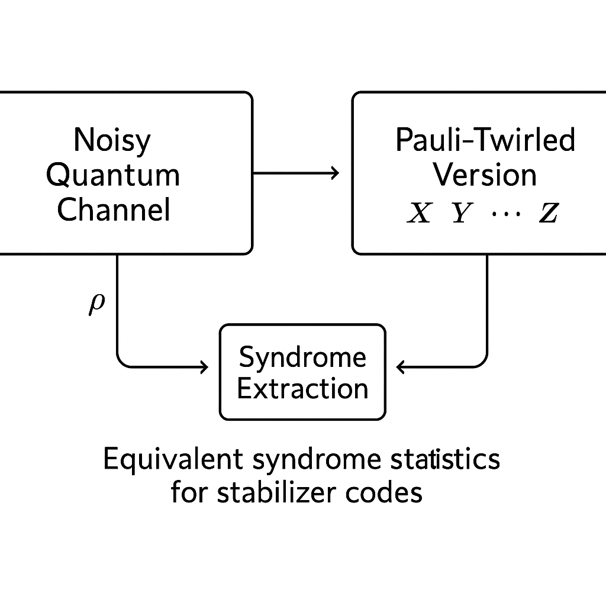
圖 1-16: Schematic comparison of a general noisy quantum channel and its Pauli-twirled version, with arrows to a syndrome extraction box showing they yield equivalent syndrome statistics for stabilizer codes.
Prompt: Schematic comparison of a general noisy quantum channel and its Pauli-twirled version, with arrows to a syndrome extraction box showing they yield equivalent syndrome statistics for stabilizer codes.
1.2 穩態碼（Stabilizer Code）的結構
穩態碼是目前最廣泛運用於容錯量子計算的碼族。給定 \(n\) 比特的 Pauli 群
\(\mathcal{P}_n\)，其元素可寫為
\[
P = i^\kappa X^{\mathbf{a}} Z^{\mathbf{b}},
\quad \mathbf{a},\mathbf{b} \in \mathbb{F}_2^n.
\]
一個穩態碼由一個 Abelian 子群
\[
\mathcal{S} \subset \mathcal{P}_n, \quad -I \notin \mathcal{S}
\]
所定義，稱為穩態群（stabilizer group）。碼空間為
\[
\mathcal{C}
= \{ \,|\psi\rangle \in (\mathbb{C}^2)^{\otimes n}\;\big|\;
S|\psi\rangle = |\psi\rangle\;\forall S \in \mathcal{S} \,\}.
\]
若 \(\mathcal{S}\) 有 \(n-k\) 個獨立生成元，則
\(\dim \mathcal{C} = 2^k\)，我們稱此為 \([[n,k,d]]\) 碼。
一個錯誤 \(E\in\mathcal{P}_n\) 可由其對所有生成元的對易關係來辨識。
若 \(\{S_1,\dots,S_{n-k}\}\) 為生成元集合，定義
\[
s_i(E) =
\begin{cases}
0, & [E, S_i] = 0,\\
1, & \{E, S_i\} = 0,
\end{cases}
\]
則錯誤綜合體（syndrome）向量為
\[
\mathbf{s}(E) = (s_1(E), \dots, s_{n-k}(E)) \in \mathbb{F}_2^{n-k}.
\]
碼距 \(d\) 定義為最小的非平凡邏輯 Pauli 的重量：
\[
d = \min\{\operatorname{wt}(L)\;|\; L \in \mathcal{N}(\mathcal{S})\setminus\mathcal{S}\},
\]
其中 \(\mathcal{N}(\mathcal{S})\) 為 \(\mathcal{S}\) 在 \(\mathcal{P}_n\) 的正規化子。
直覺上，碼距 \(d\) 代表最多可糾正 \(\lfloor (d-1)/2 \rfloor\) 個局部獨立錯誤。
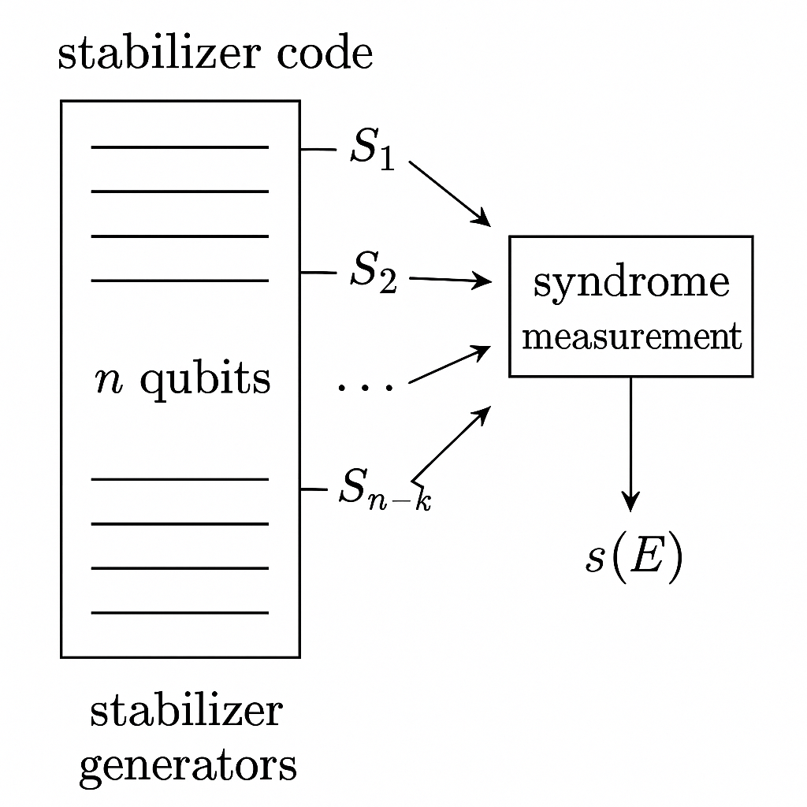
圖 1-2: Illustration of a stabilizer code: a block of n qubits, arrows pointing to stabilizer generators S1..S_{n-k}, and a syndrome measurement box that outputs a binary vector s(E).
Prompt: Illustration of a stabilizer code: a block of n qubits, arrows pointing to stabilizer generators S1..S_{n-k}, and a syndrome measurement box that outputs a binary vector s(E).
1.3 CSS 碼與表面碼（Surface Code）
1.3.1 CSS 碼的結構
CSS 碼以兩個經典線性碼 \(Z\)，都是包含在二元有限體上、長度為 \(n\) 的向量空間裡面。-->\(C_X, C_Z \subset \mathbb{F}_2^n\) 為基礎，
滿足 \(Z\) 的正交補，是 \(C\) 下標 \(X\) 的子集合。-->\(C_Z^\perp \subset C_X\)。穩態生成元可拆分成
\[
S_X = \{ X^{\mathbf{v}} : \mathbf{v} \in C_X \},
\quad
S_Z = \{ Z^{\mathbf{w}} : \mathbf{w} \in C_Z \},
\]
且 \([S_X, S_Z] = 0\) 的條件剛好導出
\(Z\) 的正交補，是 \(C\) 下標 \(X\) 的子集合。-->\(C_Z^\perp \subset C_X\) 的必要性。
重要的是，CSS 碼使得「X 類錯誤」與「Z 類錯誤」可以分別由兩個經典碼來解碼：
\(E\) 下標 X，屬於二元域 F 二 的「C 下標 Z 的正交補空間」的維度維。
X 型症候：\(s\) 下標 X、括號裡是 \(E\) 下標 Z，屬於二元域 F 二 的「C 下標 X 的正交補空間」的維度維。-->\[
\text{Z-type syndrome}: \mathbf{s}_Z(E_X) \in \mathbb{F}_2^{\dim C_Z^{\perp}},
\quad
\text{X-type syndrome}: \mathbf{s}_X(E_Z) \in \mathbb{F}_2^{\dim C_X^{\perp}}.
\]
這種結構對應到許多解碼器（如 MWPM, BP, Union-Find）的自然分解，
也是 el-loom 在程式介面上常將 X/Z 錯誤、檢查子（check operators）區分處理的理論基礎。
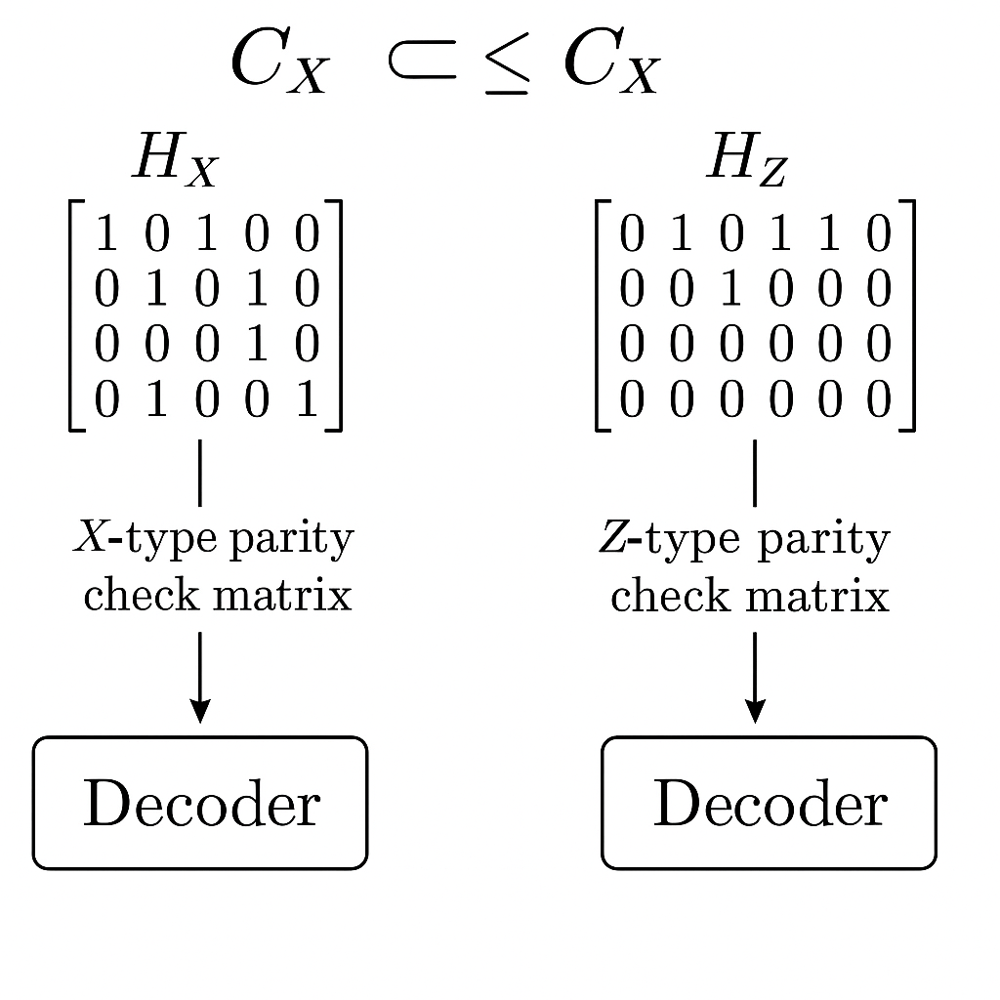
圖 1-1: Diagram showing CSS structure: two classical codes C_X and C_Z with condition C_Z^⊥ ⊂ C_X, leading to separate X-type and Z-type parity check matrices, mapping to separate decoders.
Prompt: Diagram showing CSS structure: two classical codes C_X and C_Z with condition C_Z^⊥ ⊂ C_X, leading to separate X-type and Z-type parity check matrices, mapping to separate decoders.
1.3.2 表面碼：拓撲結構與距離
表面碼是一類拓撲穩態碼，可視為在二維格子上的 CSS 碼。以「方形表面碼」為例，
可構造如下：
- 物理量子比特：放在格子的邊（edges）。
- Z 穩態（星形算符）：位於頂點 \(v\)，對應四個 incident 邊：
\[
A_v = \prod_{e \ni v} X_e.
\]
- X 穩態（面算符）：位於面 \(f\)，對應四個 bounding 邊：
\[
B_f = \prod_{e \in \partial f} Z_e.
\]
對應的 CSS 經典碼可由格子上的邊-面、邊-頂點關係之邊界算子描述。
設 \(\partial_1\) 為「邊 \(\to\) 頂點」的邊界算子，\(\partial_2\) 為「面 \(\to\) 邊」的邊界算子，
則
\(Z\) 等於偏導一的轉置。-->\[
H_X = \partial_2,\quad H_Z = \partial_1^\top,
\]
且 \(\partial_1 \circ \partial_2 = 0\) 導致
\[
H_X H_Z^\top = 0,
\]
即 CSS 正交條件。
碼距 \(d\) 對應於在格子上穿越邊界的最短「非邊界迴路」（X 邏輯）或
「非邊界切線」（Z 邏輯）的長度，直接反映為最短路徑問題，這也是為何
最小權完美匹配（MWPM）解碼器特別適用於表面碼。
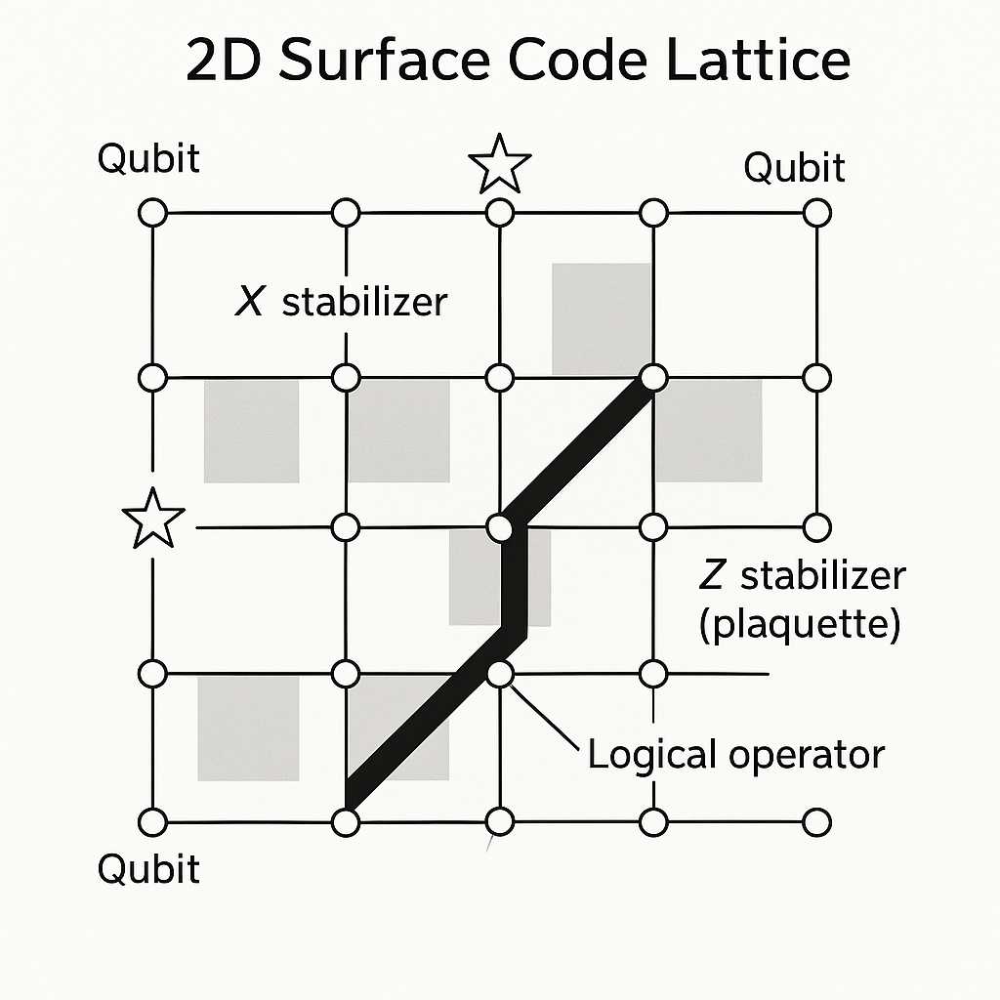
圖 1-11: Illustration of a 2D surface code lattice with qubits on edges, X stabilizers (stars) on vertices, Z stabilizers (plaquettes) on faces, and an example of a logical operator as a chain of edges crossing the lattice.
Prompt: Illustration of a 2D surface code lattice with qubits on edges, X stabilizers (stars) on vertices, Z stabilizers (plaquettes) on faces, and an example of a logical operator as a chain of edges crossing the lattice.
2. 從抽象碼到解碼問題：數學化的「解碼器」觀點
2.1 解碼問題的正式定義
給定穩態碼 \(\mathcal{S}\) 及 Pauli 噪聲模型 \(\mathcal{E}\)，
一次「量子錯誤事件」可形式化為：
- 從 Pauli 分佈中抽樣錯誤
\[
E \sim p(E),\quad E \in \mathcal{P}_n.
\]
- 測量穩態生成元，得到 syndrome
\[
\mathbf{s} = \mathbf{s}(E) \in \mathbb{F}_2^{n-k}.
\]
解碼器的任務可形式化為一個映射
\[
D : \mathbb{F}_2^{n-k} \to \mathcal{P}_n,
\quad \mathbf{s} \mapsto \hat{E},
\]
滿足「邏輯狀態儘可能被還原」的目標。嚴格來說，
最有利解碼（Maximum Likelihood Decoding, MLD） 為求解
\[
\hat{E}(\mathbf{s}) =
\arg\max_{E: \mathbf{s}(E)=\mathbf{s}} p(E),
\]
等價於在同一 syndrome 類中找出機率最大的 Pauli。
然而，對通用穩態碼而言 MLD 為 NP-hard，因此實務上多採近似解碼器：
- 幾何碼（如表面碼）上的圖論演算法（MWPM、Union-Find 等）。
- 以因子圖為基礎的 Belief Propagation (BP)。
- 神經網路或混合啟發式解碼。
這些演算法最終都接收某種抽象形式的「碼結構」與「噪聲模型」作為輸入。
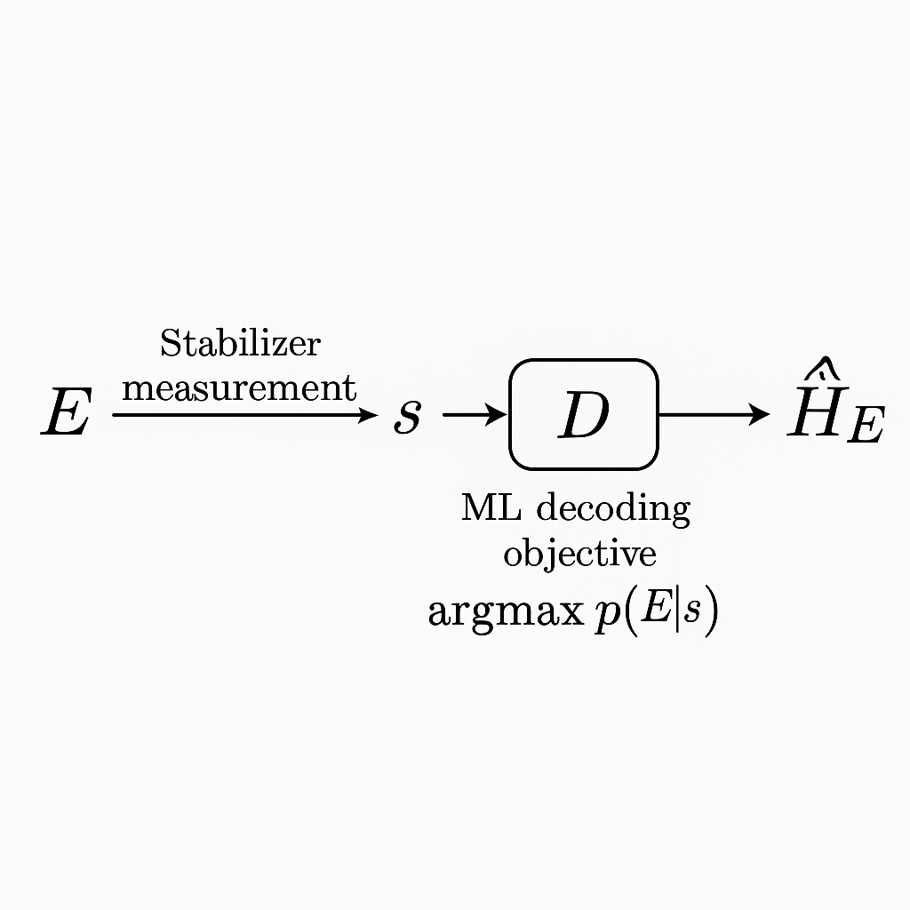
(Syndrome s) via stabilizer measurement, then (Decoder D) maps s to correction ĤE, with a note on ML decoding objective argmax_E p(E|s).">
圖 1-3: Diagram of the decoding pipeline: (Error E) -> (Syndrome s) via stabilizer measurement, then (Decoder D) maps s to correction ĤE, with a note on ML decoding objective argmax_E p(E|s).
Prompt: Diagram of the decoding pipeline: (Error E) -> (Syndrome s) via stabilizer measurement, then (Decoder D) maps s to correction ĤE, with a note on ML decoding objective argmax_E p(E|s).
2.2 Syndrome 圖與 MWPM 解碼示意
以表面碼下 Z 錯誤為例：若錯誤為 \(E_Z = \prod_{e\in\Gamma} Z_e\) 的邊集合 \(\Gamma\)，
則受影響的 X 穩態（星形算符）位於 \(\partial \Gamma\) 的端點（邊界）。
Syndrome 測量對應到
\[
\mathbf{s}(E_Z) = \partial \Gamma,
\]
其中 \(\partial\) 為邊界算子。
將 syndrome 視為格子上的「缺陷」（defects），則 MWPM 解碼器尋找一組
邊集合 \(\Gamma'\) 使得
\[
\partial \Gamma' = \mathbf{s},\quad
\Gamma' \text{ 權重最小 },
\]
對應於最佳猜測錯誤 \(E_Z' = \prod_{e\in\Gamma'} Z_e\)。
權重可由每條邊的對數似然比（log-likelihood ratio）決定，
若每條邊錯誤機率為 \(p\)，則典型權重為
\[
w_e = \log\frac{1-p}{p},
\]
於是整體最短路徑與最小權完美匹配關聯。
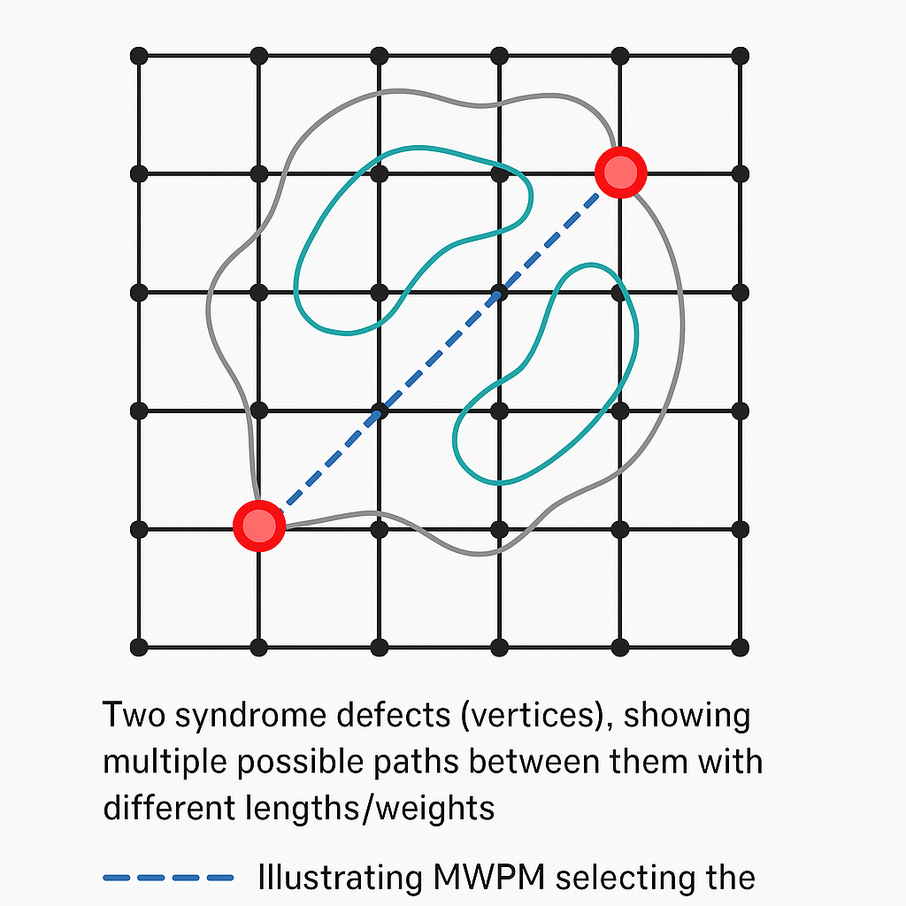
圖 1-17: Example of a surface code with two syndrome defects (vertices), showing multiple possible paths between them with different lengths/weights, illustrating MWPM selecting the minimum-weight path as the guessed error chain.
Prompt: Example of a surface code with two syndrome defects (vertices), showing multiple possible paths between them with different lengths/weights, illustrating MWPM selecting the minimum-weight path as the guessed error chain.
2.3 抽象資料結構視角：碼、通道、解碼器
為了在軟體層實現解碼器，我們需要將上述數學結構抽象為資料結構：
- 碼（Code）：
- 量子比特索引集合 \(Q = \{1,\dots,n\}\)。
- 穩態生成元集合
\(\{S_i\}_{i=1}^{n-k}\)，可表為二進位矩陣
\[
H = [H_X | H_Z] \in \mathbb{F}_2^{(n-k)\times 2n}.
\]
- 邏輯運算子集合 \(\{L_j\}\)。
- 通道（Channel / Noise Model）：
指定對每一量子比特（或多體）錯誤的機率分佈：
\[
p(E) = \prod_{\ell} p_\ell(E_\ell),
\]
或更一般的關聯結構。
- 解碼器（Decoder）：
接收 syndrome \(\mathbf{s}\)，
以及碼與通道的描述，輸出修正算符 \(\hat{E}\)。
一個現代 QEC 軟體棧，理想上會讓「碼的描述」與「通道的描述」盡量 抽象且泛用，
而把解碼演算法實現為可插拔（pluggable）的模組。el-loom 即是採用此種設計理念：
把「碼圖（code graph）」、「噪聲圖（noise graph）」與「解碼器」解耦，
以方便研究者嘗試新解碼方法或新碼族。
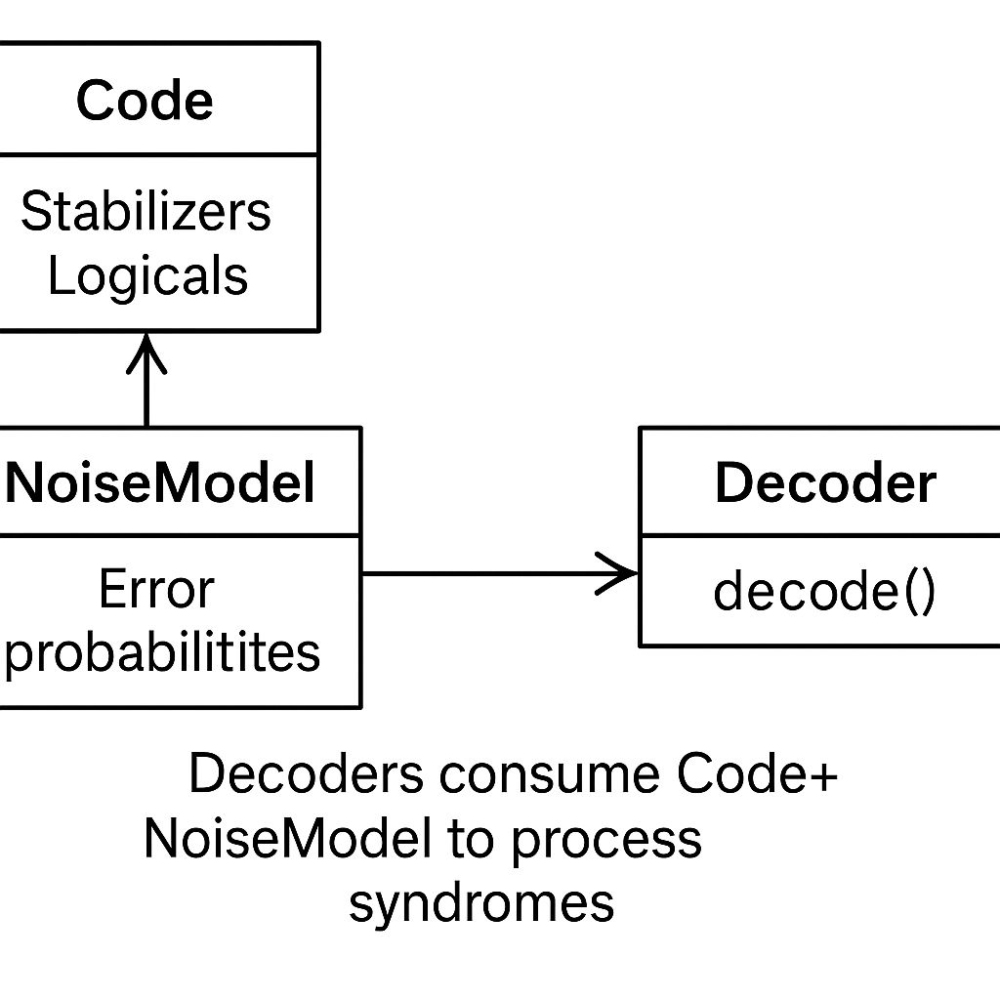
圖 1-6: UML-style diagram of abstract classes: Code (with stabilizers, logicals), NoiseModel (with error probabilities), Decoder (with decode() method), and arrows indicating decoders consume Code+NoiseModel to process syndromes.
Prompt: UML-style diagram of abstract classes: Code (with stabilizers, logicals), NoiseModel (with error probabilities), Decoder (with decode() method), and arrows indicating decoders consume Code+NoiseModel to process syndromes.
3. el-loom 生態系概觀：Rust 核心、Python 介面與模組化設計
3.1 生態系總覽與設計哲學
el-loom 是 Entropica Labs 開發的一套量子糾錯與解碼實驗平台，
其設計核心包含：
- 高效能核心：以 Rust 撰寫的核心例程，
對圖演算法、線性代數、雜湊結構等最佳化。
- Python 綁定：提供 Python API 以便快速原型、互動式實驗與整合至現有科學計算生態（NumPy / SciPy / JAX 等）。
- 模組化 / 可組合：
透過
loom 抽象，將「碼、噪聲、測量排程、解碼器」分離成可組合元件。
- 針對幾何碼的優化：
尤其是表面碼與相關拓撲碼，但也提供較一般化的接口可支援其他穩態碼。
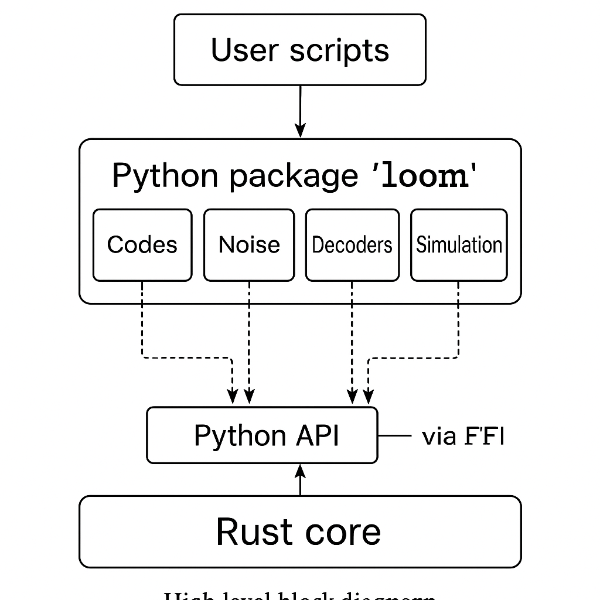
圖 1-14: High-level block diagram of el-loom: Rust core at the bottom, exposed via FFI to Python package "loom". On top, modules for codes, noise, decoders, simulations. Arrows showing user scripts calling Python APIs, which call into Rust core for performance-critical operations.
Prompt: High-level block diagram of el-loom: Rust core at the bottom, exposed via FFI to Python package "loom". On top, modules for codes, noise, decoders, simulations. Arrows showing user scripts calling Python APIs, which call into Rust core for performance-critical operations.
3.2 el-loom 主要元件與名稱空間大致結構
根據官方文件與程式庫結構，我們可概略將 el-loom 的概念模組分為：
loom.codes：
- 表面碼、旋轉碼（rotated surface code）等幾何碼建構器。
- 一般穩態碼的資料結構（stabilizer matrices, logical operators）。
loom.noise：
- Pauli 噪聲模型（depolarizing, biased noise, phenomenological noise）。
- 時間相關噪聲的抽象（例如循環中的每一輪 syndrome 測量）。
loom.decoders：
- MWPM、Union-Find、BP 等解碼器實作。
- 界面統一的
decode(syndrome) 介面。
loom.simulation（或類似名稱）：
- 封裝「噪聲施加 → 測量 → 解碼 → 成功/失敗判斷」的流程。
- 支援蒙地卡羅（Monte Carlo）錯誤率估計。
雖然實際名稱空間可能略有變化，但概念上就是「碼 / 噪聲 / 解碼 / 模擬」四個主軸，
而各自又細分為可組合的小模組。不論是 Python 或 Rust 介面，皆努力維持這種分層概念。
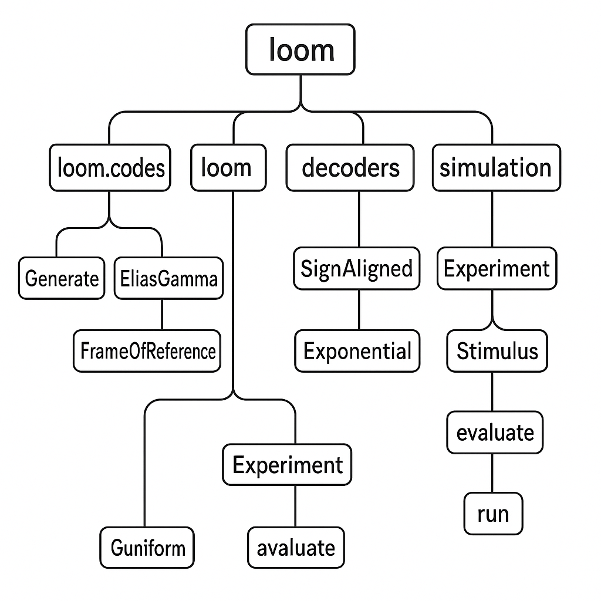
圖 1-18: Tree-like structure showing loom.codes, loom.noise, loom.decoders, loom.simulation as main submodules, with some example classes/functions nested under each.
Prompt: Tree-like structure showing loom.codes, loom.noise, loom.decoders, loom.simulation as main submodules, with some example classes/functions nested under each.
3.3 為何需要 Rust + Python 的雙層架構？
解碼器之間的效能差異常受「實作細節」大幅影響：例如 MWPM 的 Hopcroft–Karp 或 Blossom 演算法，
在大型表面碼下可能涉及上百萬個節點與邊。使用 Rust 可達到：
- 接近 C/C++ 的執行效率。
- 在所有權系統下較安全的記憶體管理。
- 更易於封裝為動態函式庫供其他語言呼叫。
相對地，研究者多習慣使用 Python 進行快速原型與資料分析。
el-loom 利用 Rust 的 FFI 將核心函式暴露給 Python：
\[
\text{Python} \xrightarrow{\text{FFI}} \text{Rust Core},
\]
使得使用者可以在 Python 裡撰寫：
from loom.codes import SurfaceCode
from loom.noise import DepolarizingNoise
from loom.decoders import MWPMDecoder
from loom.simulation import run_trial
code = SurfaceCode(distance=5)
noise = DepolarizingNoise(p=0.001)
decoder = MWPMDecoder(code, noise)
logical_failure = run_trial(code, noise, decoder)
而真正的大筆運算，如 syndrome 圖構造、圖匹配等，則在 Rust 裡執行。
這種分工是現代科學運算常見的模式（類似 JAX/XLA、PyTorch/C++ core）。
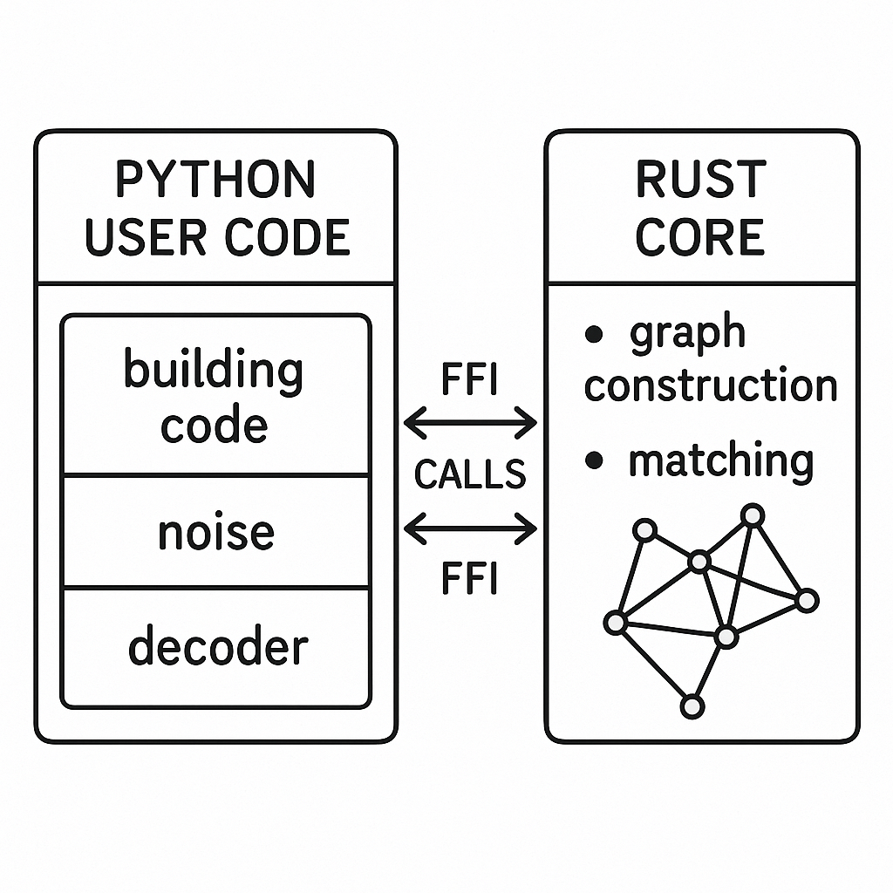
圖 1-13: Side-by-side boxes: left shows Python user code building code/noise/decoder; right shows Rust core box doing heavy computations like graph construction and matching, with arrows labelled FFI calls between them.
Prompt: Side-by-side boxes: left shows Python user code building code/noise/decoder; right shows Rust core box doing heavy computations like graph construction and matching, with arrows labelled FFI calls between them.
4. 抽象碼與 el-loom 的映射：以表面碼為例
4.1 幾何結構到資料結構的轉換
考慮距離 \(d\) 的方形表面碼，其格子大小約為 \(d \times d\)，邊數約為 \(O(d^2)\)。
在 el-loom 內部，此幾何可被轉換成：
- 一組量子比特索引 \(Q = \{0,\dots,n-1\}\)，每個對應格子上一條邊。
- X 穩態對應頂點集合 \(\{v\}\)，每個頂點連結 incident 邊索引。
- Z 穩態對應面集合 \(\{f\}\)，每個面連結 bounding 邊索引。
形式上，相當於儲存邊界算子矩陣
\[
\partial_1 \in \mathbb{F}_2^{|V|\times|E|},
\quad
\partial_2 \in \mathbb{F}_2^{|E|\times|F|},
\]
然後合成 CSS 檢查矩陣
\[
H_X = \partial_2,\quad
H_Z = \partial_1^\top.
\]
在 el-loom 的 Python 介面中，這些結構會被封裝為類別屬性，例如
（具體名稱可能略有出入）：
code = SurfaceCode(distance=5)
# 假想介面：取得檢查矩陣
HX = code.Hx # X stabilizer check matrix
HZ = code.Hz # Z stabilizer check matrix
# 幾何資訊
vertices = code.vertices
edges = code.edges
faces = code.faces
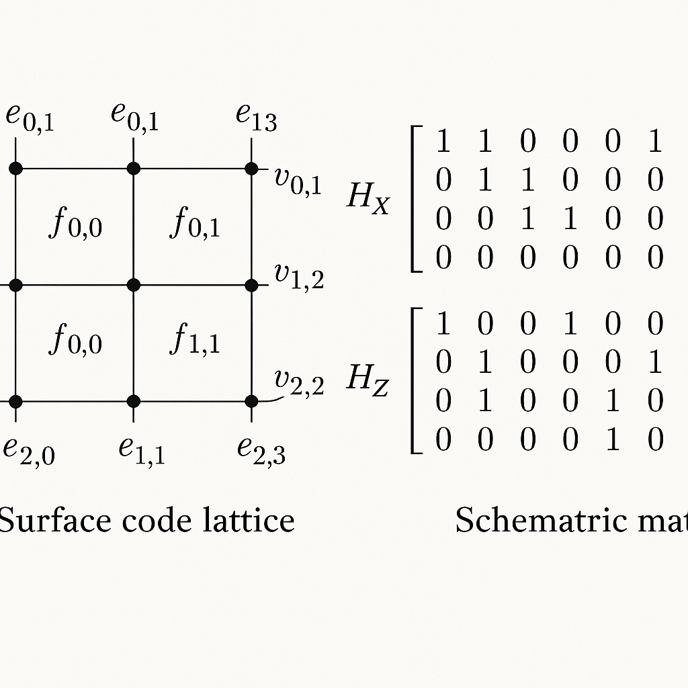
圖 1-8: A small 3x3 surface code lattice annotated with indices on edges, vertices, and faces, next to a schematic binary matrix representation Hx and Hz derived from boundary operators.
Prompt: A small 3x3 surface code lattice annotated with indices on edges, vertices, and faces, next to a schematic binary matrix representation Hx and Hz derived from boundary operators.
4.2 Syndrome 與「時空」格點（Space-Time Graph）
在實際的容錯操作中，syndrome 測量並非一次性，而是隨時間重複進行。
假設執行 \(T\) 輪 syndrome 測量，我們得到
\[
\{\mathbf{s}^{(t)}\}_{t=1}^T.
\]
時間相關錯誤（例如 readout error、閘操作中錯誤）使得 syndrome 在時間方向也呈現相關性。
在表面碼解碼中，常見做法是將此擴充為「時空格點」：
- 空間方向：格子頂點或面。
- 時間方向：測量輪次 \(t\)。
- 邊：代表在某個時間段內可能產生的錯誤事件，導致 syndrome 在兩個時空點之間改變。
MWPM 解碼在此時空圖上尋找匹配對應到錯誤事件路徑。形式上，若
\(G = (V_G, E_G)\) 為此時空圖，權重
\(w: E_G \to \mathbb{R}_{\ge 0}\) 由錯誤機率導出，則解碼器需解
\[
\text{argmin}_{M \subseteq E_G} \sum_{e \in M} w(e)
\]
subject to \(M\) 是從 syndrome 頂點集合導出的完美匹配。
在 el-loom 中，這個「時空圖」會被自動由「碼"+"噪聲模型"+"測量排程」生成，
使用者通常只須指定：
code = SurfaceCode(distance=7)
noise = PhenomenologicalNoise(p_data=0.001, p_meas=0.01)
schedule = RepeatedSyndromeSchedule(rounds=10)
decoder = MWPMDecoder(code, noise, schedule=schedule)
然後在解碼時，el-loom 會將 syndrome 時序資料轉成時空圖上的「defects」，並求解 MWPM。
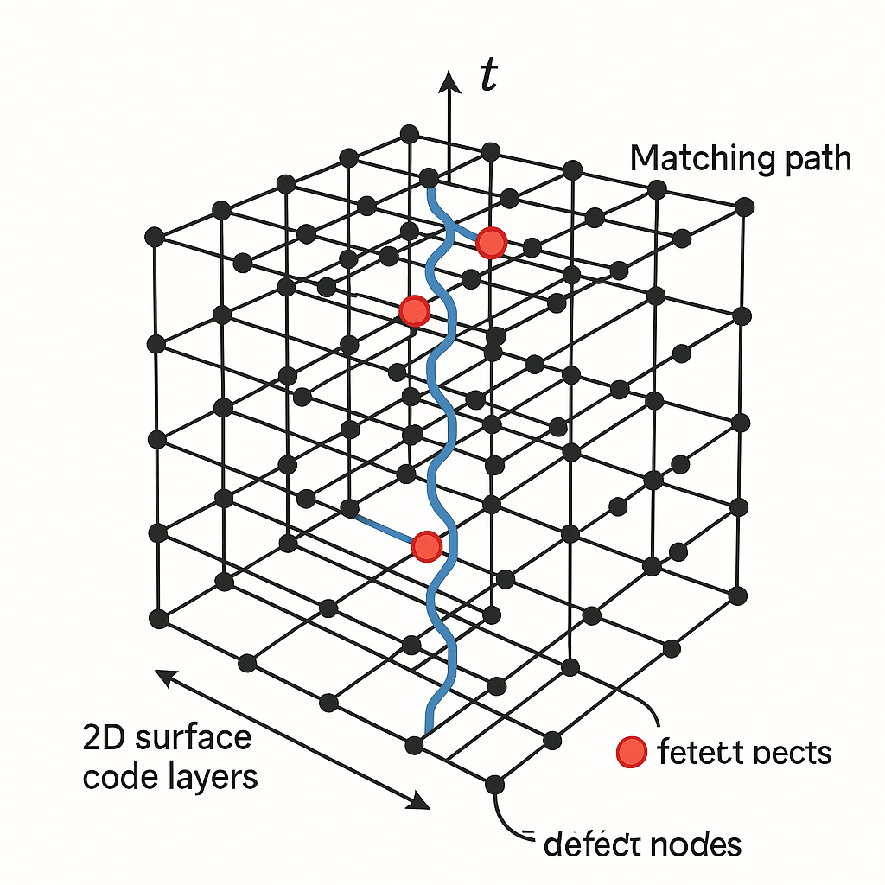
圖 1-12: 3D lattice-like diagram representing a stack of 2D surface code layers over time (t axis), with nodes at each stabilizer-time combination and edges representing possible error events; highlighted defects in space-time and matching paths.
Prompt: 3D lattice-like diagram representing a stack of 2D surface code layers over time (t axis), with nodes at each stabilizer-time combination and edges representing possible error events; highlighted defects in space-time and matching paths.
4.3 噪聲模型到邊權重：機率到能量的映射
一個典型 Pauli 噪聲模型可被寫為
\[
p(E) = \prod_{\ell} p_\ell^{\operatorname{wt}_\ell(E)} (1-p_\ell)^{1-\operatorname{wt}_\ell(E)},
\]
其中 \(\operatorname{wt}_\ell(E)\in\{0,1\}\) 表示錯誤 \(E\) 是否包含某基本錯誤事
件 \(\ell\)（例如某條邊上的 \(Z\) 錯誤、某輪讀出錯誤）。若每個事件獨立，
則對 MLD 目標
\[
\hat{E} = \arg\max_{E: \mathbf{s}(E)=\mathbf{s}} p(E)
\]
等價於最小化
\[
-\log p(E) = \sum_{\ell} \operatorname{wt}_\ell(E)\, (-\log p_\ell) + \text{const.}
\]
故每一個「可能錯誤事件」\(\ell\) 可被賦予權重
\[
w_\ell = -\log\left(\frac{p_\ell}{1-p_\ell}\right),
\]
而總權重即為這些邊的加總。此即「機率 \(\to\) 能量 / 距離」的標準映射。
在 el-loom 中，噪聲模型類（例如 DepolarizingNoise 或更複雜的
PhenomenologicalNoise）會在內部實作這個映射邏輯，
並將邊權重提供給解碼器（特別是圖匹配型解碼器）。
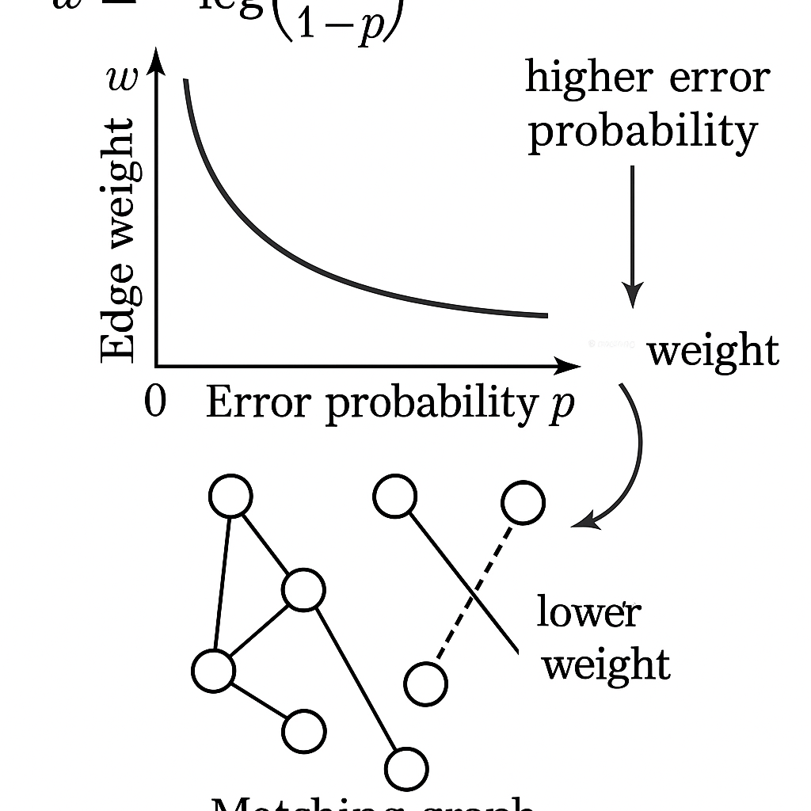
圖 1-9: Chart showing mapping from error probability p to edge weight w = -log(p/(1-p)), with a curve indicating how higher error probability corresponds to lower weight in matching graph.
Prompt: Chart showing mapping from error probability p to edge weight w = -log(p/(1-p)), with a curve indicating how higher error probability corresponds to lower weight in matching graph.
5. el-loom 軟體棧的典型工作流程：從碼構建到蒙地卡羅模擬
5.1 高階使用流程：概觀
一個典型的 el-loom 使用情境如下：
- 定義碼（Code）：例如一個距離 \(d\) 的表面碼。
- 定義噪聲模型（Noise Model）：如獨立 depolarizing 資料錯誤 + 讀出錯誤。
- 定義測量排程（Schedule）：指定重複 syndrome 測量輪數等。
- 選擇解碼器（Decoder）：如 MWPM、Union-Find、BP 等。
- 執行模擬迴圈：
- 對每一次 trial：施加噪聲、產生 syndrome、解碼、檢查邏輯錯誤是否發生。
- 統計錯誤率 / 門限（Threshold）：對不同 \(p\) 與 \(d\) 估計 logical error rate。
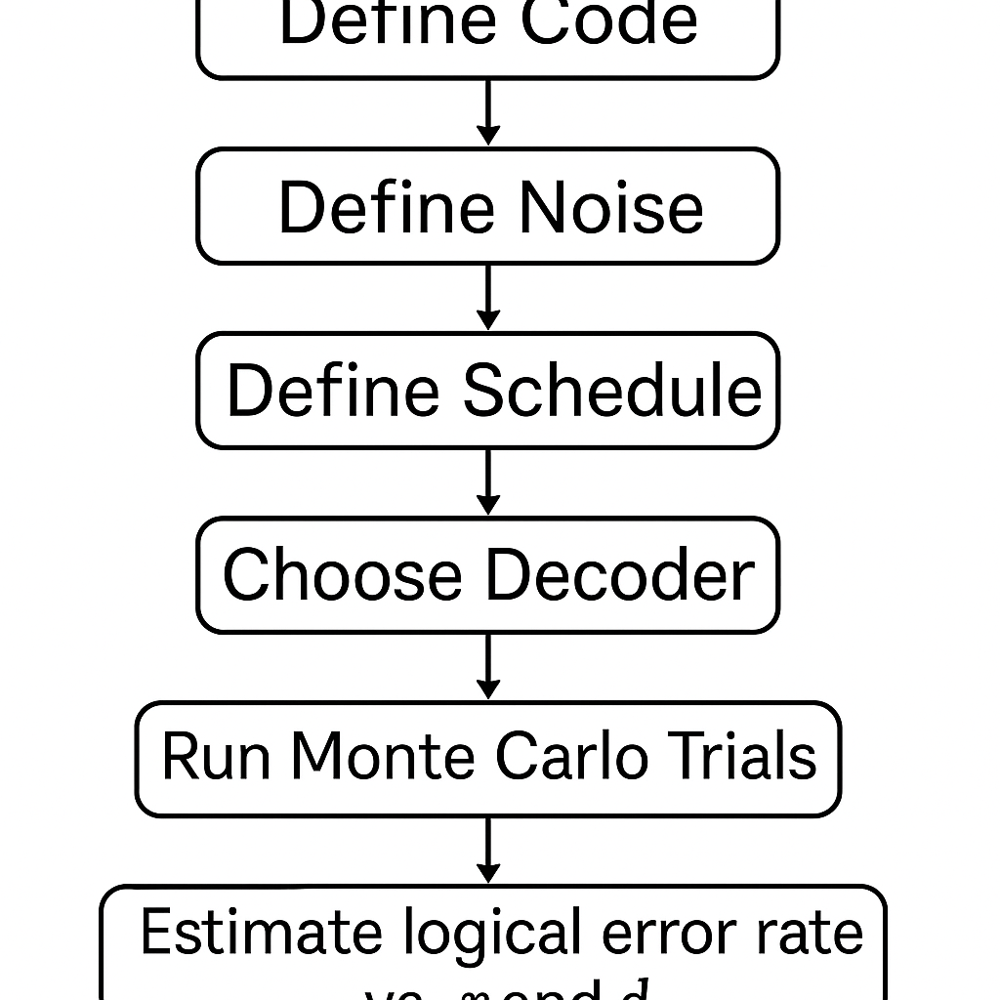
"Define Noise" -> "Define Schedule" -> "Choose Decoder" -> "Run Monte Carlo Trials" -> "Estimate logical error rate vs. p and d".">
圖 1-7: Flowchart from "Define Code" -> "Define Noise" -> "Define Schedule" -> "Choose Decoder" -> "Run Monte Carlo Trials" -> "Estimate logical error rate vs. p and d".
Prompt: Flowchart from "Define Code" -> "Define Noise" -> "Define Schedule" -> "Choose Decoder" -> "Run Monte Carlo Trials" -> "Estimate logical error rate vs. p and d".
5.2 碼與噪聲的程式化表示：一個具體例子
以下示意如何在 el-loom 的 Python API 中定義一個表面碼與簡單噪聲模型
（介面名稱僅為說明性，實際以官方文件為準）：
from loom.codes import RotatedSurfaceCode
from loom.noise import DepolarizingNoise
from loom.decoders import MWPMDecoder
from loom.simulation import MonteCarloSimulator
# 1. 建構碼
d = 5
code = RotatedSurfaceCode(distance=d)
# 2. 定義噪聲：每個物理比特獨立 depolarizing 機率 p
p = 0.001
noise_model = DepolarizingNoise(p=p)
# 3. 定義 syndrome 測量輪數
rounds = 1 # 單輪，對靜態錯誤模型
# 4. 選擇解碼器
decoder = MWPMDecoder(code=code, noise_model=noise_model, rounds=rounds)
# 5. 建立蒙地卡羅模擬器
sim = MonteCarloSimulator(code, noise_model, decoder)
# 6. 執行 N 次試驗，估計 logical error rate
N = 10_000
logical_failures = 0
for _ in range(N):
result = sim.run_trial()
if result.logical_error_occurred:
logical_failures += 1
logical_error_rate = logical_failures / N
print("Logical error rate:", logical_error_rate)
這段流程在底層等價於多次重複以下操作：
- 抽樣錯誤 \(E \sim p(E)\)。
- 計算 syndrome \(\mathbf{s}(E)\)。
- 使用解碼器產生補償 \(\hat{E} = D(\mathbf{s}(E))\)。
- 檢查 \(E \hat{E}\) 是否等於某個非平凡邏輯運算子。
形式上，邏輯錯誤的事件可表述為
\[
C(E) := E \cdot D(\mathbf{s}(E)) \in
\mathcal{N}(\mathcal{S}) \setminus \mathcal{S},
\]
其中 \(C(E)\) 為最終殘餘錯誤。若 \(C(E)\) 屬於邏輯子群而非穩態群，
則表示邏輯資訊被翻轉。
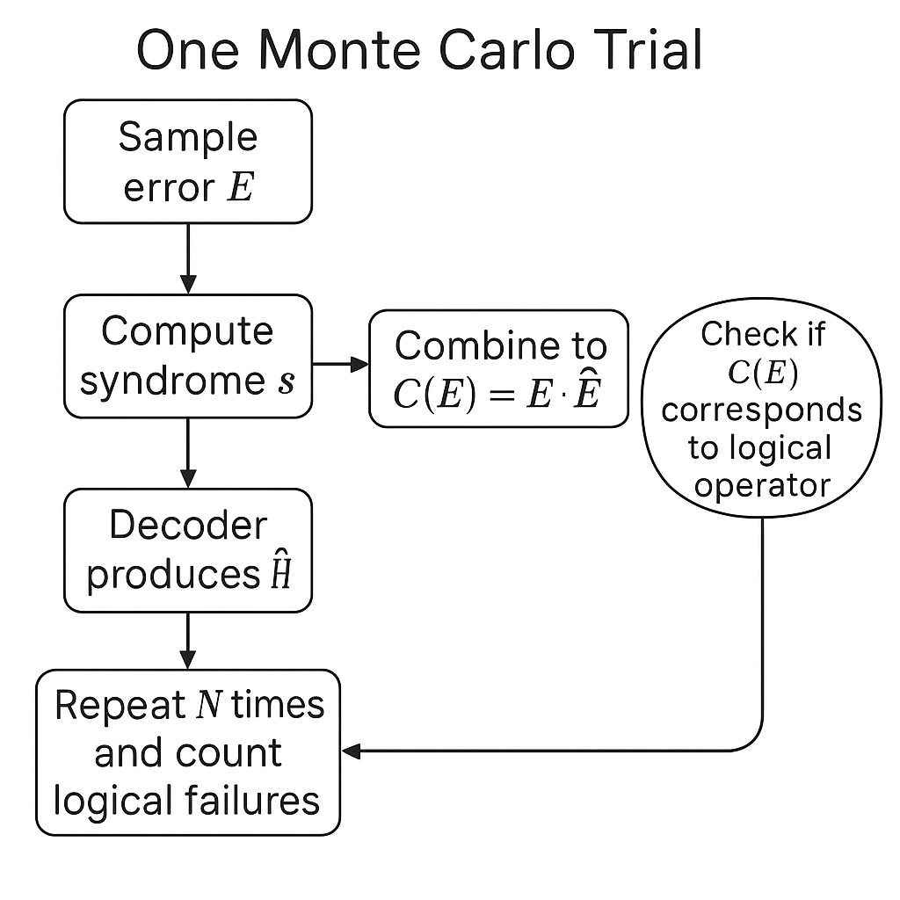
圖 1-15: Diagram showing one Monte Carlo trial: sample error E, compute syndrome s, decoder produces ĤE, combine to C(E)=E·ĤE, and check if C(E) corresponds to a logical operator; repeat N times and count logical failures.
Prompt: Diagram showing one Monte Carlo trial: sample error E, compute syndrome s, decoder produces ĤE, combine to C(E)=E·ĤE, and check if C(E) corresponds to a logical operator; repeat N times and count logical failures.
5.3 實作層的細節與擴展性
由於 el-loom 採用模組化架構，研究者可針對以下層次進行擴展：
- 自訂碼族：
- 實作一個新的
Code 類別，提供
\(\{H_X, H_Z\}\)、邏輯運算子等。
- 若為幾何碼，可額外提供幾何資訊，讓特殊解碼器利用。
- 自訂噪聲模型：
- 繼承
NoiseModel 介面，實作錯誤抽樣與
syndrome 圖權重計算。
- 可支援非獨立噪聲或時間相關噪聲。
- 自訂解碼器：
- 在 Rust 核心實作新的圖演算法或啟發式方法。
- 或在 Python 層快速原型一個演算法（效率可能較低，但方便實驗）。
此種設計使 el-loom 不僅是一個「現成的解碼器程式庫」，更是
一個進行 量子糾錯研究 的實驗平台。
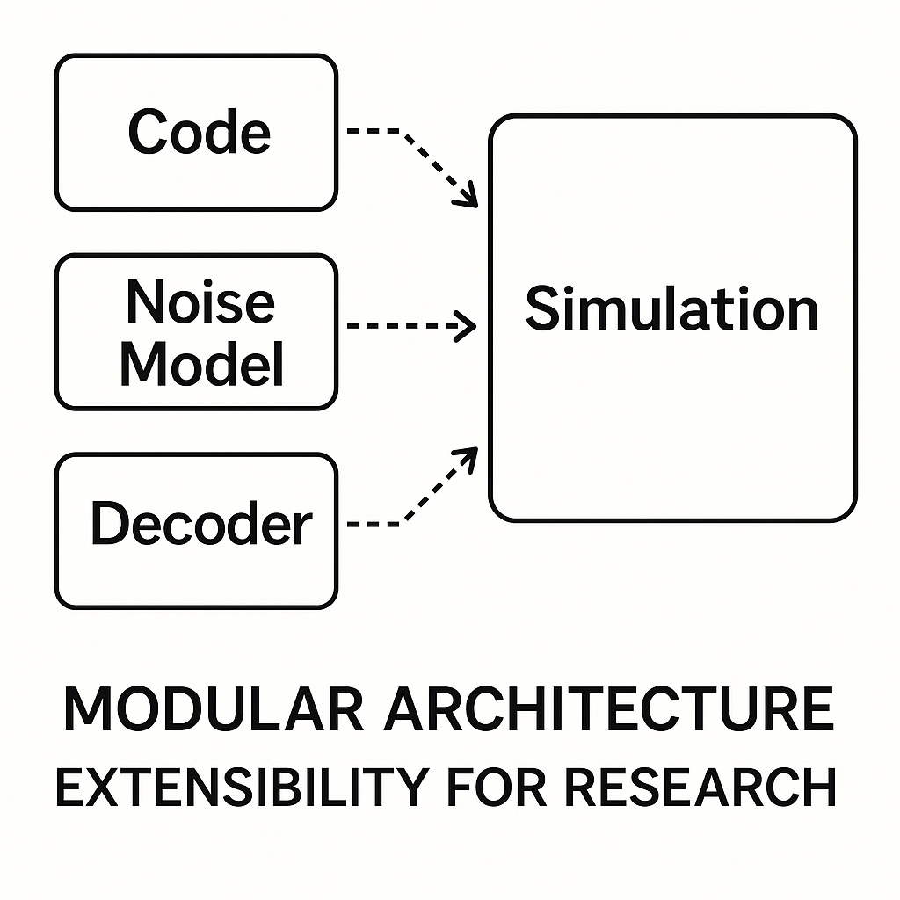
圖 1-4: Modular architecture diagram where new Code, NoiseModel, and Decoder modules can be plugged into an existing Simulation engine, highlighting extensibility for research.
Prompt: Modular architecture diagram where new Code, NoiseModel, and Decoder modules can be plugged into an existing Simulation engine, highlighting extensibility for research.
6. 從抽象數學到模組化軟體棧：一個統合視角
6.1 抽象結構對應關係總結
我們可將前述理論與 el-loom 的軟體元件對照如下：
| 理論概念 |
數學對象 |
el-loom 中的抽象 |
| 穩態碼 |
\(\mathcal{S} \subset \mathcal{P}_n\)、\(H = [H_X|H_Z]\) |
Code 類別（SurfaceCode 等） |
| 邏輯空間 |
\(\mathcal{N}(\mathcal{S})/ \mathcal{S}\) |
Code.logical_ops 或類似欄位 |
| 噪聲通道 |
\(\mathcal{E}(\rho)=\sum p(E)E\rho E^\dagger\) |
NoiseModel 類別 |
| syndrome 函數 |
\(\mathbf{s}: \mathcal{P}_n \to \mathbb{F}_2^{n-k}\) |
Code.syndrome(E) 或內部方法 |
| 解碼器 |
\(D: \mathbb{F}_2^{n-k} \to \mathcal{P}_n\) |
Decoder.decode(syndrome) |
| 時空圖 |
圖 \(G=(V_G, E_G)\)，權重 \(w\) |
由 Code+NoiseModel+Schedule 生成 |
| ML 目標 |
\(\hat{E}= \arg\max p(E|\mathbf{s})\) |
MWPM / BP / UF 等實作近似 |
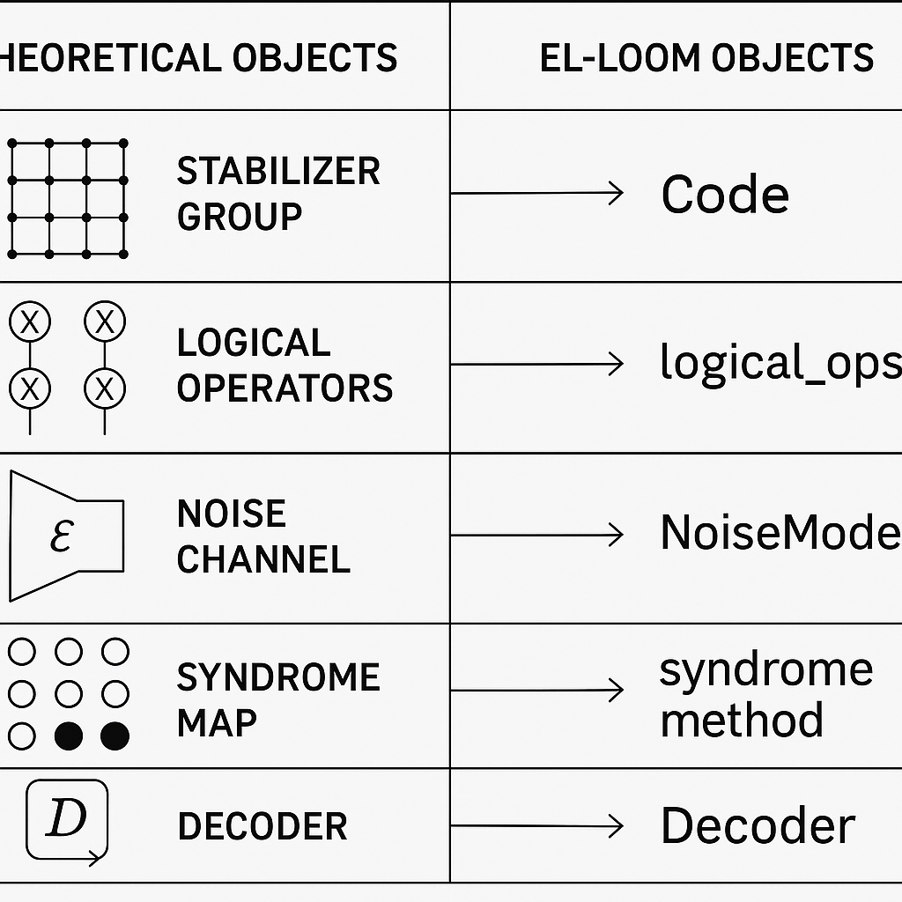
圖 1-10: Table-like infographic matching theoretical objects (stabilizer group, logical operators, noise channel, syndrome map, decoder) to el-loom software objects (Code, logical_ops, NoiseModel, syndrome method, Decoder) with arrows connecting them.
Prompt: Table-like infographic matching theoretical objects (stabilizer group, logical operators, noise channel, syndrome map, decoder) to el-loom software objects (Code, logical_ops, NoiseModel, syndrome method, Decoder) with arrows connecting them.
6.2 對博士生與研究者的意涵
對於希望從事量子糾錯與解碼研究的博士生與研究者而言，
el-loom 的價值主要在於：
- 快速將理論想法實作化：
例如新型拓撲碼、新噪聲模型或新解碼演算法。
- 可重複與可比較的實驗環境：
通過統一介面與模擬框架，便於與既有解碼方法進行公平比較。
- 可伸縮性：
透過 Rust 核心支援中大型碼尺寸的模擬，評估實際可行性與門限行為。
- 與硬體層整合的潛力：
把抽象碼與噪聲模型與實際裝置參數（T1/T2、閘誤差、量測誤差等）連結，
為未來軟硬整合（software-hardware co-design）奠定基礎。
就教學與研究訓練而言，熟練從數學模型（如：\(\mathcal{S}, \mathcal{E}, D\)）
到 el-loom 程式碼的映射，有助於學生理解「理論假設如何落地為具體實驗」，
並學會評估理論在有限資源、實際噪聲條件下的表現。
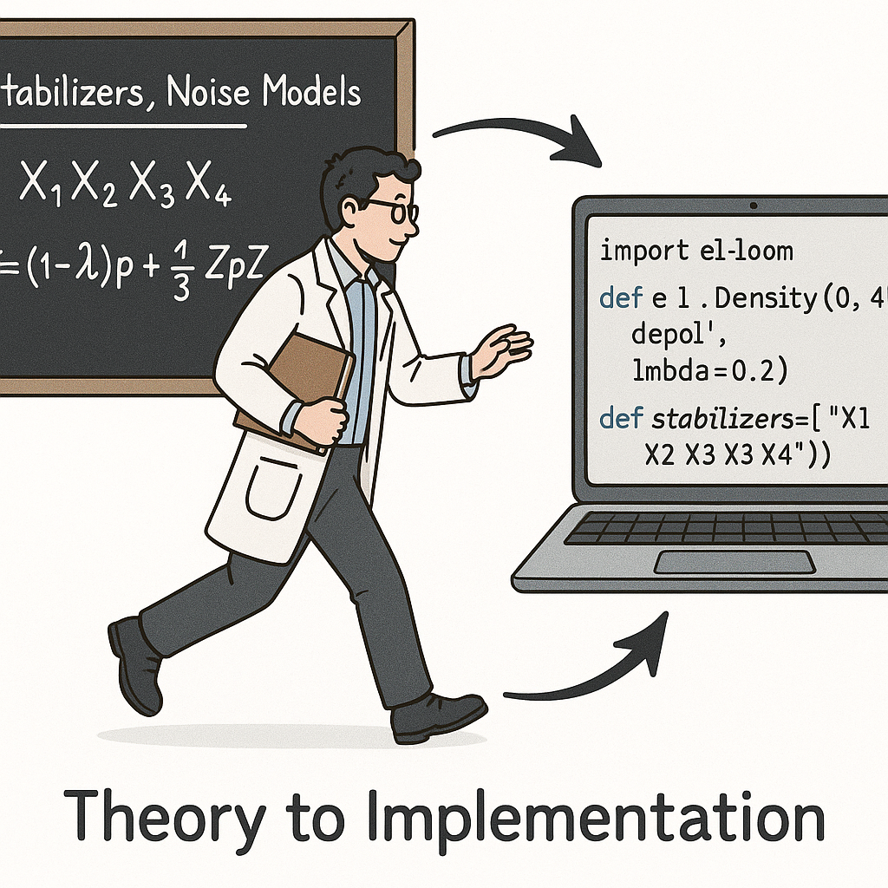
圖 1-20: Conceptual image of a researcher moving from a blackboard with equations (stabilizers, noise models) to a laptop screen showing code using el-loom, indicating translation from theory to implementation.
Prompt: Conceptual image of a researcher moving from a blackboard with equations (stabilizers, noise models) to a laptop screen showing code using el-loom, indicating translation from theory to implementation.
7. 小結與後續課程方向
本課程從理論角度回顧了：
- 穩態碼與 CSS 碼的數學結構。
- 表面碼作為拓撲 CSS 碼的幾何與同調描述。
- 解碼問題作為一個組合最佳化問題（特別是時空圖上的匹配問題）。
接著，我們概述了 el-loom 的模組化軟體架構：
- Rust 核心提供高效能解碼與圖運算。
- Python 介面提供易用的碼、噪聲與解碼器抽象。
- 透過「碼 + 噪聲 + 排程 + 解碼器」的組合，構成可擴展的 QEC 實驗平台。
在後續課程中，我們可以進一步深入：
- 具體閱讀 el-loom API 文檔與原始碼，剖析每個類別與函式的數學含義。
- 從頭實作一個簡化版表面碼與 MWPM 解碼器（Python 原型），再對照 el-loom 的 Rust 實作。
- 探討更高階的容錯結構（如 lattice surgery、編碼邏輯閘）如何在 el-loom 中表述。
- 將實驗結果如門限曲線、logical error rate vs. code distance 圖像化與分析。
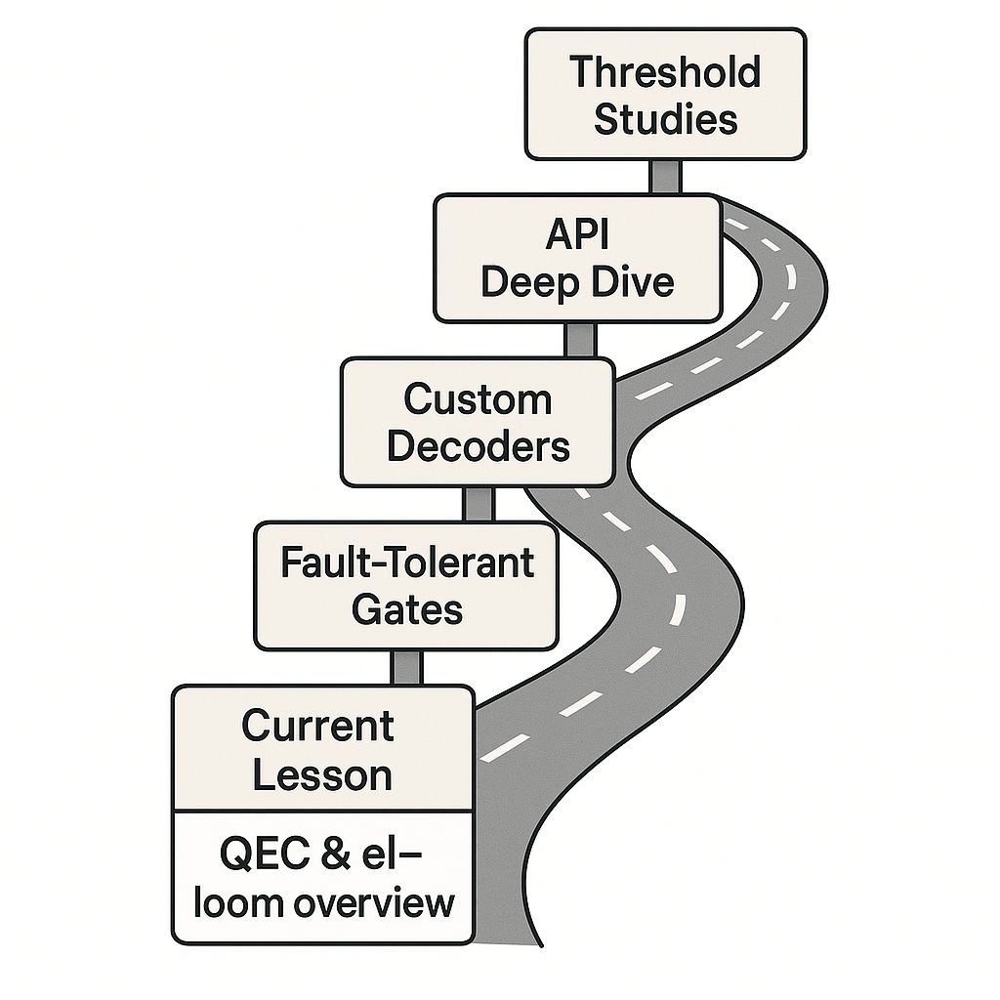
圖 1-5: Roadmap diagram showing current lesson at the base (QEC + el-loom overview) and future lessons on API deep dive, custom decoders, fault-tolerant gates, and threshold studies stacked above it.
Prompt: Roadmap diagram showing current lesson at the base (QEC + el-loom overview) and future lessons on API deep dive, custom decoders, fault-tolerant gates, and threshold studies stacked above it.
透過這樣由理論到實作的縱深訓練，期望讀者不僅能在紙上設計
高度抽象的量子糾錯方案，更能評估其在實際硬體與軟體環境中的可行性，
並進一步推動下一代容錯量子計算架構的發展。